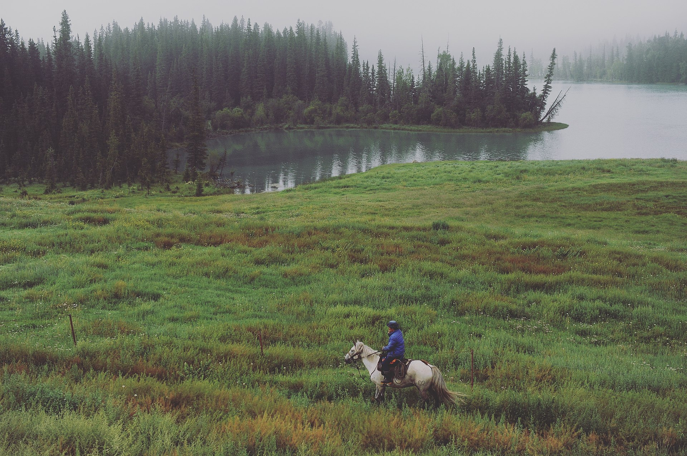
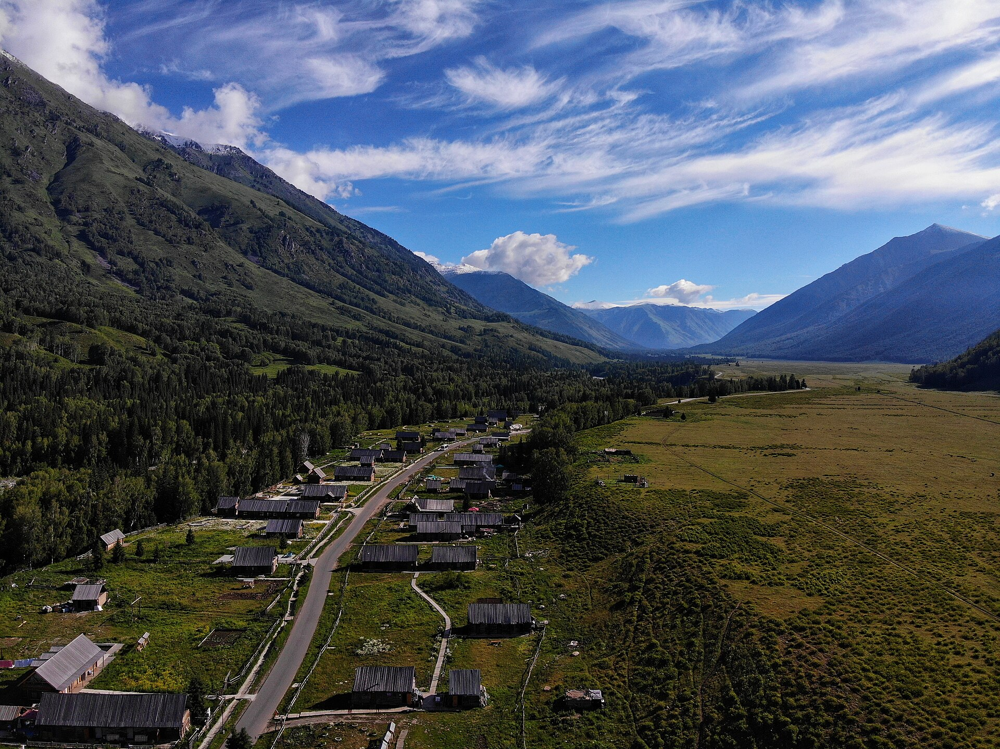
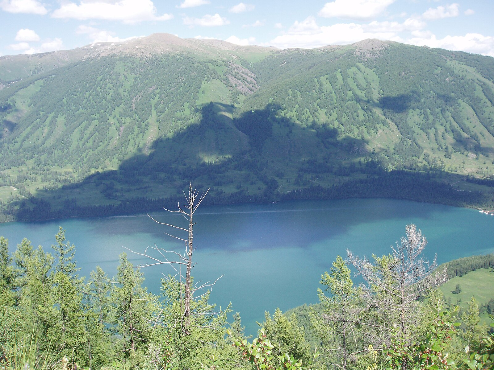
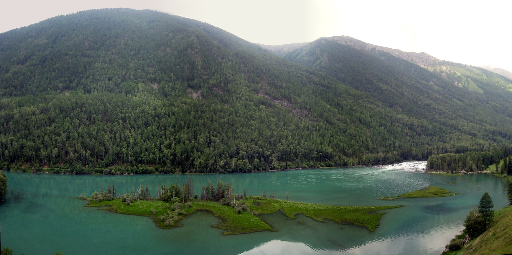
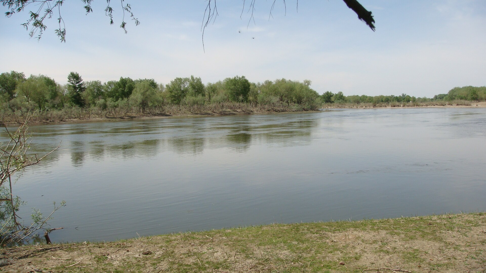
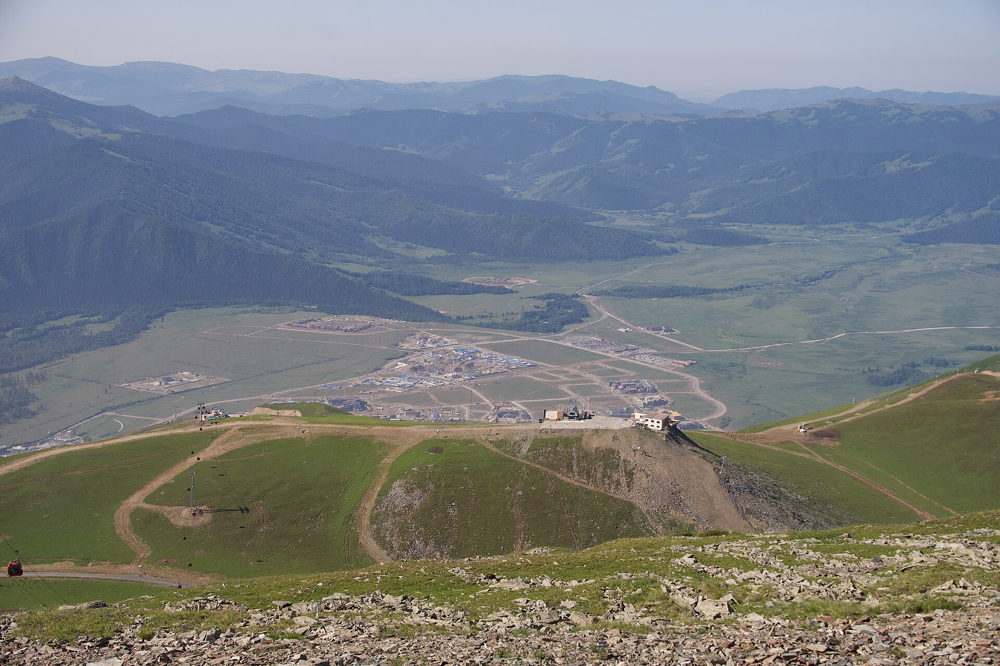

主推荐景色不打折
9天8晚，先缓冲再进山
乌鲁木齐前后都保留缓冲；阿勒泰/布尔津先住一晚；禾木、喀纳斯各连住2晚。这样不会把到达、退房、区间车和核心景色全挤在同一天。
广州/佛山 → 乌鲁木齐 → 阿勒泰 → 禾木 → 喀纳斯/贾登峪 → 布尔津 → 乌鲁木齐 → 广州/佛山
核心：禾木木屋与河谷、喀纳斯湖、神仙湾/月亮湾/卧龙湾；白哈巴只在票务、边境管理和身体都合适时替换半天。
乌鲁木齐前后都保留缓冲；阿勒泰/布尔津先住一晚；禾木、喀纳斯各连住2晚。这样不会把到达、退房、区间车和核心景色全挤在同一天。
默认用区间车串喀纳斯湖与三湾，短栈道随时折返。观鱼台末段长台阶、三湾全程长走和禾木高处爬坡只作天气好、本人主动想走时的可选项。
今晚：次日出发点附近
关键：只落地休息
今晚：阿勒泰/布尔津1晚
关键：不连夜进禾木
今晚：禾木第1/2晚
关键：到村后只慢走
今晚：禾木第2/2晚
关键：木桥河岸优先
今晚：喀纳斯/贾登峪第1/2晚
关键：湖区轻游
今晚：喀纳斯/贾登峪第2/2晚
关键：湖+三湾，不爬观鱼台
今晚：布尔津1晚
关键：白哈巴只作替换
今晚：机场/车站圈1晚
关键：保留返程缓冲
今晚：正常不住
关键：只保交通
今晚：次日出发点附近
关键：确认D2双段交通
今晚：禾木第1/2晚
关键：本线最累，不夜进山
今晚：禾木第2/2晚
关键：木桥河岸优先
今晚：喀纳斯/贾登峪第1/2晚
关键：湖区轻游
今晚：喀纳斯/贾登峪第2/2晚
关键：区间车串三湾
今晚：布尔津1晚
关键：白哈巴删除
今晚：机场/车站圈1晚
关键：不接同日广州票
今晚：正常不住
关键：只保交通
住：次日机场/车站圈
睡前：核对D2航站楼/车站与接驳。
住：阿勒泰市或布尔津主路
睡前：司机、车牌、阿禾公路与禾木预约。
首日：木桥、河岸、老村。
次日：晨景+村内慢走，不搬行李。
首日：换乘、入住、湖区。
次日：喀纳斯湖+三湾，区间车减腿。
默认：出山休息。
白哈巴：只能替换上午，不能额外叠加。
D8：回乌鲁木齐住1晚。
D9：飞广州后回佛山。
住：次日机场/车站圈
睡前：确认D2能在天黑前到禾木。
住：禾木第1晚
止损：晚点就在阿勒泰/布尔津住，不夜进山。
住：禾木第2晚
重点：木桥与河岸，观景台可删。
重点：湖区+三湾。
删除：白哈巴与观鱼台长台阶。
住：县城主路1晚
重点：早出山、午睡、补给。
D7：回乌鲁木齐住1晚。
D8：只保飞行，不补景点。
| 项目 | 何时查 | 官方/一手渠道 | 价格与包含项 | 没票怎么办 |
|---|---|---|---|---|
| 广州⇄乌鲁木齐 | 建议提前21-45天比较 | 航司官网/官方App；支付页最终确认 | 机票、行李额、退改规则分开看，不写死航班 | 前后移动1天或比较深圳/广州出发，不压缩禾木和喀纳斯2晚 |
| 乌鲁木齐→阿勒泰/北屯 | 机票随时查；火车按12306预售期 | 航司、12306 | 阿勒泰雪都机场是机场；阿勒泰站/北屯站是火车站，不能混写 | A改同日另一交通仍可住缓冲夜；B买不到早班就启用阿勒泰/布尔津临时住宿 |
| 禾木 | 旺季建议提前3-7天，节假日更早 | 微信“喀纳斯景区”“原行网”；以实名支付页为准 | 发改委旺季门票基准50元/人；区间车和运营时段以当期页为准 | 无预约不进山，续住阿勒泰/布尔津并顺延，不买黄牛票 |
| 喀纳斯 | 旺季建议提前3-7天 | 微信“喀纳斯景区”“原行网” | 发改委旺季门票基准160元/人·2天；区间车按当期票型另核 | 顺延入园或将D6改村内休整，不用私车绕入口 |
| 白哈巴可选 | 至少提前3-7天核对当期管理 | 官方公众号/原行网、喀纳斯换乘中心公告 | 发改委旺季门票基准30元/人；交通、证件和边境管理以当期公告为准 | 直接删除，保留喀纳斯湖与三湾，体验不算失败 |
| 正规接驳/小团 | 旺季提前7-15天 | 有订单的平台、正规旅行社、酒店可核验车队 | 写清两人总价、油路停、司机食宿、取消规则与是否走夜路 | 先平台改派；无法当天进山就住安全城镇 |
| 酒店 | 禾木/喀纳斯旺季提前30-60天 | 携程/美团/去哪儿等支付页 | 只认含税可取消价；本页真实OTA核价待出发前补充 | 优先保连住，再降房型；不把两晚拆到偏远不同民宿 |
价格核对日期：2026-07-16。发改委门票基准可核验；2026具体区间车、分时段、开放和组合票必须以出发前官方支付页为准。

今日一句话：只完成进疆和入住，不安排夜游。
预算：两人当日落地交通+餐饮+住宿约500-1000元，不含机票。
必做/可删：入住、核对D2必做；全部乌鲁木齐景点可删。
吃饭：酒店附近清汤面、抓饭不放辣、粥粉面。
带：身份证、机票、充电宝、薄外套。
到广州白云实际航站楼值机，核对托运行李和中转规则。
取行李，按D2实际起点去酒店；不跨机场/车站住错圈。
确认D2票、司机、车牌、接点和缓冲住宿。
平台通知D2接驳；必要时改晚班，保留缓冲夜。
外卖清淡餐，洗澡睡觉。
按机票提前2小时、火车提前60分钟离店。
今日一句话：到北疆后先睡一晚，不连夜进禾木。
预算：两人疆内交通+住宿+餐饮约1000-2600元。
必做/可删：与D3司机碰面必做；城市闲逛可删。
吃饭：清炖牛羊肉、抓饭、拌面备注不辣。
带：身份证、车票、晕车药、水、充电宝。
航班到阿勒泰机场，或火车到阿勒泰站/北屯站；按订单接驳。
住司机次日方便接的主路酒店，午睡和补给。
确认阿禾公路路况、D3接人时间、禾木预约和行李规则。
原地住，不夜进禾木。
续住并顺延D3，联系景区和酒店退改。
08:00前后上车，争取下午到禾木。

今日一句话：一路看森林草原，到村后只走木桥与河岸。
预算：车辆、票务、住宿和餐饮两人约1500-3000元。
必做/可删：禾木桥与河岸必做；高处观景台今天删除。
吃饭：牛肉汤、土豆烧牛肉、清炒蔬菜；先问辣椒。
带：身份证、预约、薄外套、水、雨衣、晕车药。
主路酒店上车，沿正规路线去禾木入口；途中只在正规服务点短停。
入口换景区交通，确认大件行李到住宿的方式。
入住 → 禾木桥 → 河岸 → 老村短走 → 回房休息。
只入住，河岸移到D4。
村内公交+木桥近端短看。
睡到自然醒或按天气看晨景，不强制早起。
今日一句话：不搬行李，把最好看的光线留给禾木。
预算：两人餐饮+村内交通约350-700元，住宿另计。
必做/可删：木桥、河岸、木屋巷道必做；高处观景台可删。
吃饭：奶茶另放盐、烤馕、清炖肉、番茄鸡蛋面。
带：防风外套、防晒、充电宝、雨衣、舒服鞋。
天气好且精神足，河岸看晨雾；不追凌晨机位。
木桥 → 老村 → 河岸草地 → 午餐/午睡。
选择河岸夕光；观景台只走舒适范围，随时原路返。
避开桥头正中，沿河岸向两侧分流。
只做木桥+河岸1公里内。
08:00后退房去喀纳斯，不抢极早班。

今日一句话：换乘、入住后只看喀纳斯湖，不叠三湾长走。
预算：两人车辆/区间车/餐饮约700-1400元，门票住宿另计。
必做/可删：湖区必做；游船、观鱼台和白哈巴可删。
吃饭：湖区简餐、清汤面；自备轻食避免排队。
带：身份证、票码、水、轻食、雨衣、充电宝。
退房，按官方/平台交通从禾木到贾登峪或喀纳斯入口。
换乘中心核验票和行李，入住老/新村主路或贾登峪。
区间车到喀纳斯湖，湖边短栈道慢走后返回。
只入住，湖区移到D6。
换乘中心→湖区短看，减少栈道。
08:00前后开始湖区+三湾。

今日一句话：湖区和三湾完整看，站与站之间优先坐车。
预算：两人餐饮+当日额外项目约300-900元；游船不计入默认。
必做/可删：月亮湾、卧龙湾、神仙湾必做；观鱼台长台阶删除。
吃饭：换乘中心简餐，自备水和不辣轻食。
带：票码、防晒、薄外套、雨衣、水、充电宝。
按客流先喀纳斯湖或三湾；遵从当天调度。
换乘中心午餐、休息、充电。
神仙湾 → 月亮湾 → 卧龙湾；默认每站短栈道，站间坐区间车。
湖区短看，三湾选1-2个，不等能见度。
每湾观景台拍照即返，不走湾间全程。
确认D7是否选白哈巴；不选就早出山。

今日一句话：默认早出山去布尔津；白哈巴只在全条件合适时替换上午。
预算：两人接驳+餐饮+住宿约1000-1800元；白哈巴票车另计。
必做/可删：安全到布尔津必做；白哈巴、五彩滩均可删。
吃饭：冷水鱼先问做法和时价，点清蒸/清炖；不点游客大套餐。
带：身份证、车票、晕车药、水、充电宝。
退房出山，按订单到布尔津县城。
只有预约、交通、天气和送达时间都确认时才去；它替换上午，不与所有三湾叠加。
布尔津入住、午睡/晚餐；不再长距离赶景。
取消五彩滩，只入住。
白哈巴直接删除。
按北屯/阿勒泰出发票提前上车。
今日一句话：只完成离开北疆和回乌鲁木齐。
预算：两人接驳+火车/航班+住宿餐饮约1200-3000元。
必做/可删：到站、入住、返程确认必做；全部乌市景点可删。
吃饭：车站/酒店附近清淡简餐。
带：身份证、订单、水、轻食、充电宝。
布尔津酒店→北屯/阿勒泰站或机场，预留山路与安检。
只去D9实际起飞机场圈酒店。
核对航站楼、行李额和回佛山交通。
有D8缓冲夜，不改D9前的景点。
平台改签并在布尔津续住，不拼夜车。
航班前2小时到航站楼。
今日一句话：只保返程，不补大巴扎等重景点。
预算：市内接驳+餐饮两人约200-500元，不含机票。
必做/可删：值机和回佛山必做；所有停留可删。
吃饭：机场清淡套餐。
带：身份证、订单、充电宝、全部行李。
酒店退房去实际航站楼。
按当日运营回佛山，向家人报平安。
使用可取消酒店续住，航司改签。
直接回家，不经停市区。
检查身份证、相机与充电宝。
今日一句话：落地只休息，确认D2早班大交通与接驳闭环。
预算：两人住宿餐饮接驳约500-1000元，不含机票。
必做：确认D2能在天黑前到禾木；做不到就启用临时缓冲夜。
吃饭/物品：清淡简餐；身份证、充电宝、晕车药。
住次日出发点附近，不夜逛。
确认早班、司机、车牌、禾木预约和最晚入村时间。
D2改住阿勒泰/布尔津，后续删白哈巴。
选择A方案，不强行压缩。
按早班时间离店。
今日一句话：只有早班+书面接驳能天黑前到村才执行。
预算：两人疆内交通/车辆/住宿餐饮约1800-3800元。
必做/可删：安全到村必做；所有沿途打卡和夜游删除。
吃饭/物品：自备轻食；身份证、水、晕车药、薄外套。
乌鲁木齐→阿勒泰机场/站或北屯站。
平台车辆直达禾木入口，换景区交通。
只入住、吃饭、睡觉。
17:00前无法确认进村，就住阿勒泰/布尔津。
D3进禾木，D4去喀纳斯，删除禾木完整慢游的一半。
不走长夜路。
今日一句话：木桥、河岸与老村慢走，观景台可删。
预算：两人餐饮村内交通约350-700元，住宿另计。
吃饭/物品：清炖肉、面食不辣；防晒、外套、充电宝。
晨景→木桥→河岸。
午餐、午睡。
木屋巷道和河岸夕光。
村内公交+桥头近看。
只走1公里内。
08:00后退房。
今日一句话：换乘、入住、湖区短走，不叠加白哈巴。
预算：两人接驳餐饮约700-1400元，票房另计。
吃饭/物品：简餐；票码、水、雨衣、充电宝。
退房，经官方/平台交通到贾登峪。
入住后看喀纳斯湖。
开始返回住宿。
湖区移到D5上午。
只换乘入住。
08:00开始核心日。
今日一句话：区间车串湖与三湾，观鱼台和白哈巴删除。
预算：两人餐饮及可选项目约300-900元。
吃饭/物品：自备轻食；防晒、外套、水、充电宝。
湖区或三湾按客流先后执行。
换乘中心休息。
神仙湾→月亮湾→卧龙湾，站间坐车。
湖区与三湾顺序对调。
每湾只走观景台。
早出山去布尔津。
今日一句话：白哈巴删除，出山后午睡和吃饭。
预算：两人接驳住宿餐饮约1000-1800元。
吃饭/物品：清蒸冷水鱼先问时价；身份证、晕车药、水。
退房出山。
布尔津入住、休息。
确认D7票和接驳。
不逛河堤。
外卖回房。
按票提前离店。
今日一句话：只完成北疆回乌鲁木齐，不接同日广州航班。
预算：两人交通住宿餐饮约1200-3000元。
吃饭/物品：清淡简餐；身份证、订单、水、充电宝。
去北屯/阿勒泰站或机场。
住D8机场圈。
保留缓冲夜。
平台改签并续住。
航班前2小时到。
今日一句话：只保飞行和回家。
预算：市内接驳餐饮约200-500元，不含机票。
物品：身份证、订单、全部行李。
酒店退房去实际航站楼。
按当日运营回佛山。
续住机场圈，航司改签。
落地直接回家。
检查行李。
中心：按下一段实际机场/车站选1-2公里圈。
关键词：“乌鲁木齐机场/乌鲁木齐站 酒店 接送 可取消”。
检查：不跨机场与车站；D8住D9起飞机场圈。
中心：司机方便接的主路1-1.5公里圈。
关键词：“阿勒泰市 主路 酒店 接送”或“布尔津县城 主路 酒店”。
作用：吸收D2晚点，避免夜进山。
中心：禾木村公交站/主路约800米内，避免拖箱爬坡。
关键词：“禾木村 公交站 木屋民宿 热水 可取消”。
检查：大件行李接送、热水、独卫、早餐和退改。
优先：喀纳斯新/老村主路和村内公交站；价格过高则贾登峪游客中心圈。
关键词：“喀纳斯新村 公交站 酒店”或“贾登峪游客中心 酒店”。
检查：二日票/进出园、行李、村内公交和早餐。
中心：县城主路/河堤餐饮圈1-1.5公里。
关键词：“布尔津县城 主路 酒店 可取消”。
检查：D8去北屯/阿勒泰接驳、早餐打包、寄存。
D1住D2早班出发点；D7住D8起飞机场圈。
主路/公交站800米内；确认晚到是否接行李。
新/老村公交站优先，贾登峪为价格和行李备选。
主路、餐饮和次日接驳方便；白哈巴删除。
状态：真实OTA核价待出发前补充。
原因：路线尚未给出具体日期，禾木和喀纳斯旺季价格随日期、房型和退改变化很大。本页不展示虚构截图、不引用模糊“起”价。
核价动作：确定日期后，在携程/美团/去哪儿分别查1间1晚、2位成人、可免费取消、含税支付价；截图必须同时看见酒店名、入住/退房日期和价格。
候选类型：乌鲁木齐/阿勒泰/布尔津优先全季、汉庭、如家、智选假日等可核验连锁；禾木和喀纳斯以位置、热水、独卫、行李接送和真实差评为先。
确定真实日期后再补充平台、酒店全名、日期、人数和支付价。
必看：木桥、禾木河、木屋村落。可删：高处观景台、骑马、吉克普林远线。
厕所/补给：游客服务区、村内主路；水和轻食从住处带出。
下雨/太累：村内公交+木桥近端30-60分钟；回房休息。
离场：前晚向民宿确认行李和去喀纳斯的上车点。
必看：湖色、森林和河口。可删：游船、观鱼台、长距离湖边步行。
天气替代：雾大就看近处湖岸，不等整天；雷雨立即回换乘中心。
离场：17:00前后开始回住宿，避免错过末班村内交通。
必看：月亮湾、卧龙湾；神仙湾遇大雾可删。拍照：栏杆内观景台，不跨护栏。
下雨：三选二；大雨只保月亮湾。太累：每站下车拍照即返。

白哈巴怎么选？只作半天替换项；先核证件、预约和景区交通可选支线必看：只有本人特别想看边境木屋村落时才去。可删：整条支线，删除不影响喀纳斯主体验。
止损：天气差、睡眠不足、班次不顺或到布尔津会太晚，立即取消。
天气差/太累：全部夜游删除。离场：按火车/航班时间提前60-120分钟离店。
吃：抓饭、清炖羊肉、拌面不放辣、烤馕、酸奶。
搜：“阿勒泰 清炖羊肉 明码标价”“乌鲁木齐 机场 清淡餐”。
避坑：转场日不吃超量烧烤，不喝酒。
吃：牛肉汤、土豆烧肉、番茄鸡蛋面、奶茶另放盐。
搜：“禾木村 清汤面”“喀纳斯新村 家常菜 不辣”。
避坑：景区餐高峰先看菜单和总价，自备面包/牛奶做兜底。
吃：冷水鱼可选清蒸/清炖、家常蔬菜、面食。
搜：“布尔津 冷水鱼 明码标价 近期评价”。
避坑：鱼先问品种、重量、每斤价和加工费，不点含糊套餐。
水、面包、饭团、牛奶、巧克力、常用肠胃药。区间车排队或餐厅做错时先吃安全餐，不空腹硬撑。
含广州⇄乌鲁木齐、8晚住宿、正规接驳/小团、基础票务、餐饮和备用金。
便于单独比较当地实际花费。
住宿不减半；若无法拼车会更高。
省1晚缓冲住宿与部分餐饮，但D2更累。
白哈巴默认删除。
住宿仍按整间，拼车失败会增加。
| 两人项目 | 方案A 9天 | 方案B 8天 | 计算口径 |
|---|---|---|---|
| 广州⇄乌鲁木齐 | 4000-7000 | 4000-7000 | 2人往返含税支付价区间；行李额与退改另核。 |
| 乌鲁木齐⇄阿勒泰/北屯 | 800-2200 | 800-2200 | 飞机/火车按实际组合；不写死班次。 |
| 当地正规接驳/小团 | 3500-6000 | 3500-6000 | 阿勒泰/北屯、禾木、喀纳斯、布尔津闭环；平台订单。 |
| 住宿 | 4200-8200 | 3900-7600 | A 8晚；B 7晚。禾木和喀纳斯旺季波动最大。 |
| 门票与基础景交 | 700-1100 | 650-1000 | 2名成人；官方门票基准+当期区间车估算，白哈巴仅A上限含。 |
| 餐饮 | 2200-3400 | 2000-3200 | 两人每日约250-380元，景区轻食与县城正餐混合。 |
| 市内短交通 | 600-1000 | 550-900 | 机场/车站/酒店短接驳，不与小团重复。 |
| 备用金 | 1000-1800 | 800-1400 | 天气、道路、临时续住和医疗。 |
| 两人合计 | 17000-30700 | 16200-29300 | 逐项相加，可复算；不是固定报价。 |
未计：观鱼台额外交通、游船、骑马、旅拍、无人机、景观房升级和白哈巴临时政策性费用。预算核对日期：2026-07-16；出票订房时按支付页重算。
A方案本来就住阿勒泰/布尔津；B方案立即启用同样的临时缓冲夜，D3再进禾木。绝不夜赶阿禾/山路；后续删白哈巴，不删禾木和喀纳斯核心。
先在官方渠道看相邻时段/日期；使用可取消酒店整体顺延。仍无票就住阿勒泰/布尔津休息，不买黄牛票、不接受私车“带进去”。
停在交管允许的最近安全城镇，联系平台、景区和酒店退改；不绕野路，不让司机冒险夜行。若影响返程，优先启用备用金和乌鲁木齐缓冲夜。
查看“原行网”舒适度和现场调度；湖区与三湾顺序对调，中午在换乘中心休息。只保月亮湾、卧龙湾和湖区，观鱼台与游船全部删除。
这是预设可删项，直接改为喀纳斯湖边慢走、村内休息或早出山；不临时找私车，不影响主线。
禾木只走木桥和河岸；三湾站间全坐区间车，每站只看观景台；观鱼台删除。核心画面仍能保留。
只在原平台发起改派/退款，保留聊天和订单证据；请酒店协助联系有资质车队。当天无法安全到下一站就续住，不私下转账。
先联系民宿行李接送和村内公交；无法解决就更换主路/公交站附近可取消房。不要拖大箱走长坡，必要时把大件寄存在布尔津/阿勒泰。
每晚离线保存票码、酒店、司机电话和地图；充电宝随身。失联时回游客中心/换乘中心/酒店前台，不独自走小路。
先删观鱼台、游船、白哈巴、景观房和旅拍；再比较航班/火车。不要砍正规接驳、主路住宿、禾木2晚和喀纳斯2晚。